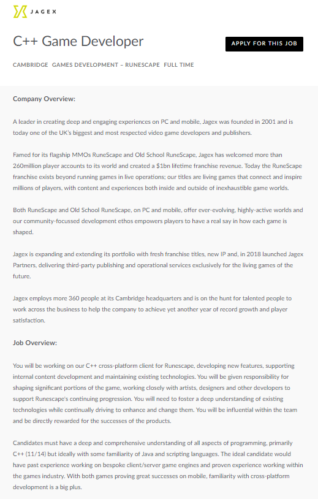

My Ideal Job

C++ Game Developer
The listing above entails a job listing from the Video Game Studio Jagax, developer of the MMORPG's Runescape and Oldschool Runescape. They studio is looking for an experianced C++ game developer
to work on their cross-platform client for Runescape, this position will involve both development and design for the game. This position appeals to me as
game design is an interest of mine and the opportunity to use my programing skills in a problem solving capacity. I also have respect for the
studio, Runescape and Old School Runescape are both products which I have an appreciation for
The position asks for many technicals skils, expertise of the C++ programming language, proficiency in java and experiance in many game engine systems and platforms. Outside of the technical it also asks for personal development skills such as the ability to work in a team with a variety of departments, game development practices, the ability to think of new game systems and the problem solving skills to find solutions in many different situations.
My current skill are a basic understanding of C++ and Java and 0 formal game development work. I do have some teamworking and problem solving skills, from my years of studying in University and working in retail and hospitality. As is evident, my skills fall woefully short from the levels which this position require, my plan to obtain these skills will take many years but the journey towards developing in this skill set is something I am exited to work towards. After finishing my degree in Information Technology I hope to find an entry level programming job for a corporate game studio, I plan to work for many differing stuidios over the years to gain a broad knowledge base, when I gain enough experience I hope to find work in smaller studios for a time as it will allow me to take greater responsibilities.